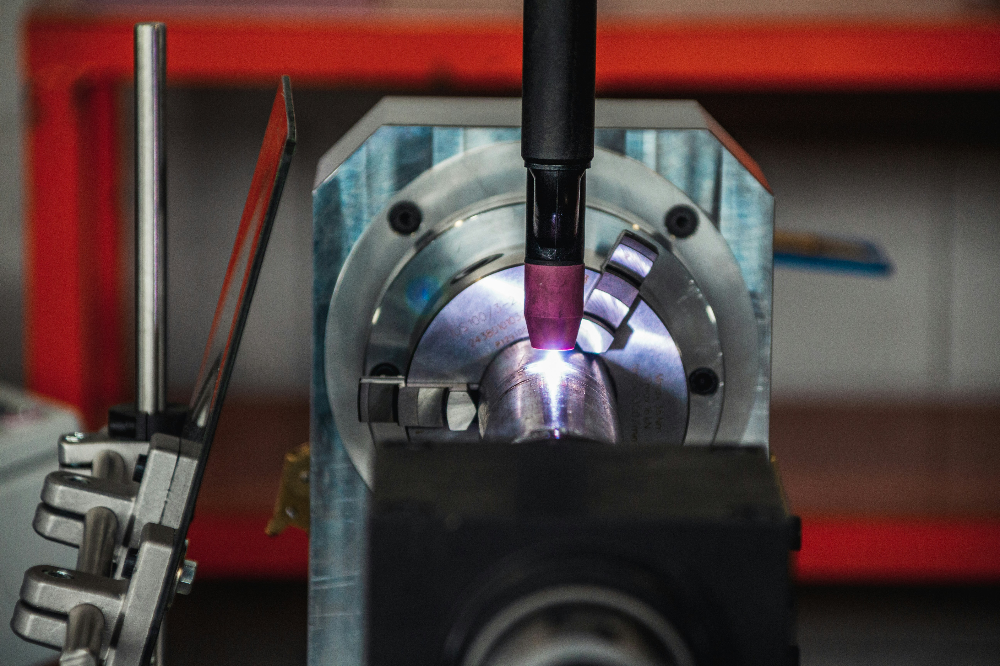

Topic: Laser Welding
Student Name: Navneet Singh
This website explains the fundamentals of laser welding, where it is used, key advantages and limitations, and important safety and quality requirements. The information is presented in a clear format for non-technical readers and includes in-text citations and APA 7 references.
Course assignment website | Prepared for welding process research project

Website Guide
Use the pages above to move through the full report:
Introduction to the process Equipment and working principle Industry applications Safety and quality control Visuals + educational video APA 7 references